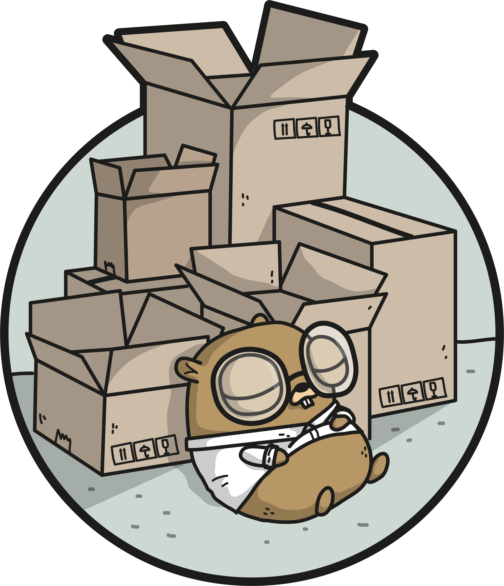
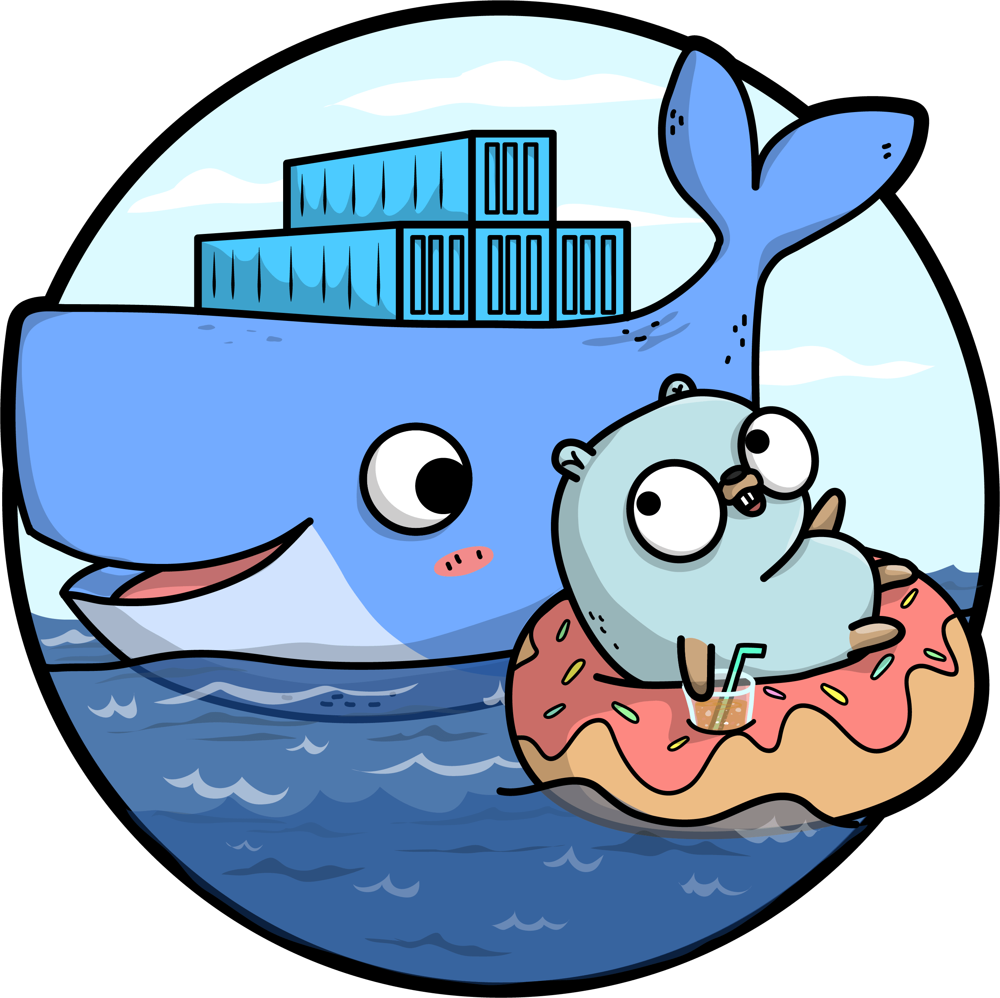

Bad HR expirience or How new repo was born

Logektor ⚡️ Forewords This repo has some background, let me tell about it. Once, quite some time ago, I came to the company on the interview, for quite good and interesting position. We were talking about what they need and what I will need to do on this position. Meeting it self was good and I was so excited about that position.
But after few days I received tests assignment from them.
Testing Mailer in Go

Testing Mailer in Go Forewords I needed a way to test mail confirmation. When you are dealing with deb authentication you would like to be sure that this email exist. And usually I use is_email_confirmed column next to user credentials in the database table. Once user hits siging endpoint as last step I send an email with confirmation token.
I was looking on few popular tools across the Internet:
https://mailtrap.
Flexible Env in Go

Flexible Env in Golang Forewords I was doing hobby project, nothing special, server with authentication few endpoints and connection to database. I wrapped this project in docker to distribute project to another developer, he wanted to help with fronted but sucks at backend. Then I realized that my friend does not want to struggle with database setup and so on. So, solution was straight forward - docker-compose.
Problem I prefer using .